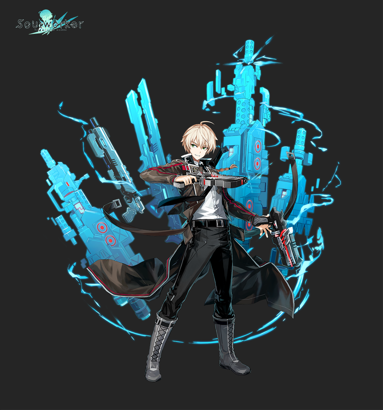

어윈 아크라이트
어윈 아크라이트

그는 진짜 천재였다.
평범한 사람들과는 다른 사고방식, 압도적인 흡수력과 응용력. 자신을 평범하다고 믿고 있었던 그는, 자신의 천재성을 자각하였다.
천재성을 앞세워 자신의 기량을 뽐내던 어느 날, 그는 한 가지 사실을 인식했다.
재미가 없다. 무슨 일을 해도 재미가 없다.
‘노력’이라는 것이 결여된 최정상은 아무런 가치가 없었다.
그러던 중, 공백에 대한 뉴스를 들었다.
모든 것이 불명인 그 압도적인 존재. 그는 마치 무언가에 홀린 듯 공백을 찾아갔다.
그리고 일말의 망설임도 없이, 가벼운 발걸음으로 스스로 걸어갔다.
그는 알고 싶었다. 자신의 인지 범위를 뛰어넘는 존재에 대해.
탐구와 연구는, 그가 가장 즐거워했던 행위였기 때문에, 그는 한없이 가벼워 보이고 진지함이라는 한 조각도 없는 것 같아 보이지만 언제나 자신감 넘치며 탐구를 멈추지 않는다.
괴물들이 우글거리며 사람들이 초능력을 사용하는 지금의 세계야말로 그에게 있어서는 가장 이상적인 세계인지도 모른다.
쾌락의 건재즈
공백이 출현한 후 떠돌아 다니면서 여행을 하다가 우연히 잔디이불캠프 리더인 테네브리스 일행을 만나
잔디이불캠프로 합류했으나 거기서 하루 에스티아라는 소녀를 만나 그녀가 감금에 가까운 상황에 놓인것을 보고
그녀를 캠프에서 빼돌리고 데자이어 에너지를 사용하여 캠프를 탈출한다.
기본적으로 자신의 쾌락에 따라서 행동하지만 하루를 끝까지 내버려두지 못하는것을 보면 그녀에게 관심이 있는 것 같다.
소울웨폰은 권총을 사용한다.